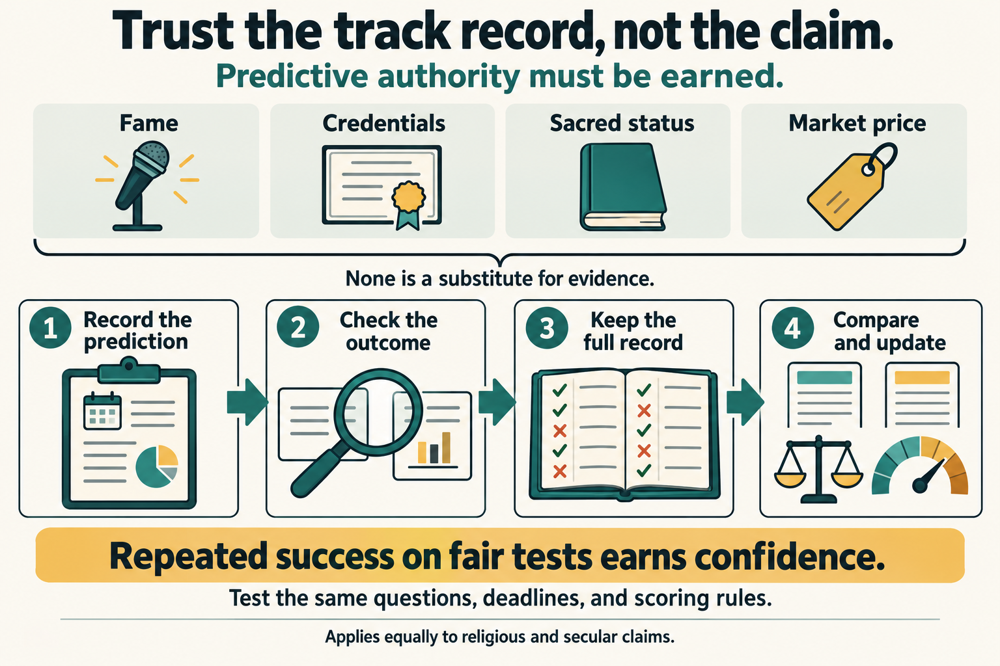
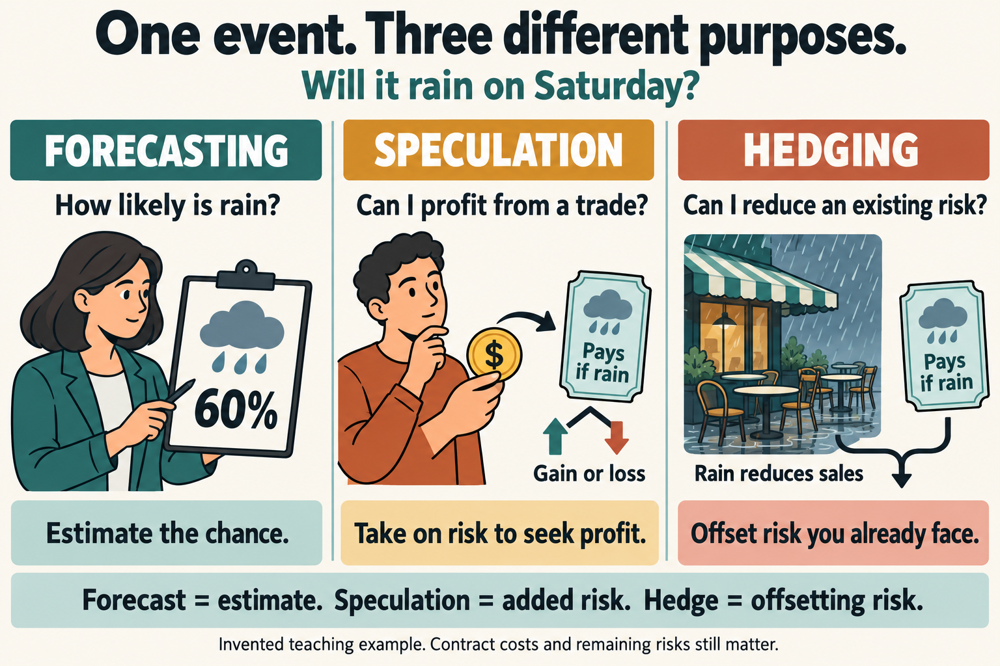

01 · Earn trust by predicting
Authority should earn its credibility
Someone says they know what will happen. They might be an economist, a religious leader, a political commentator, an AI system, or a crowd trading in a prediction market. What should make us trust them?
The central test is demonstrated predictive success: do their clear, recorded expectations repeatedly match what happens, better than reasonable alternatives? Reputation, confidence, wealth, sacred status, and impressive language cannot substitute for that record.
The main lesson
When an authority claims knowledge about how the world works, ask what observations that knowledge leads us to expect. Then check those expectations fairly. Give more weight to methods that succeed, and reduce confidence when the evidence warrants it.
This test reaches beyond predictions of tomorrow. A scientific explanation can predict the result of a new experiment. A claim about the past can predict what independent records or physical traces we should find. The important feature is that the evidence tests the claim, rather than being selected to fit it afterward.
There are limits to the test. Accurate forecasts do not, by themselves, tell us which goals are morally right. A moving poem need not forecast the weather. But when a person uses their wisdom or authority to make claims about observable events, those claims should face observable tests.


02 · Read a market price carefully
A price makes a belief visible, not infallible
A prediction market lets people trade contracts whose payouts depend on a defined event. In a simple example, a “Yes” contract pays $1 if the event happens and $0 if it does not. Paying 70 cents puts 70 cents at risk for a possible $1 payout. A winning contract produces 30 cents of profit before fees—not $1 of profit.
That 70-cent price is often read as roughly a 70% market-implied chance. It is a useful signal, not a direct measurement of nature. Prices can also reflect how much money participants have, their appetite for risk, demand for protection, and how easy it is to buy or sell. Always read the exact event definition and settlement rules.
Money can reward finding overlooked information and penalise mistakes. It does not guarantee that participants are informed, independent, or honest. A confident crowd can share the same error. A thinly traded market can be a poor guide.
A 2026 working paper by Diercks, Katz, and Wright evaluates Kalshi forecasts for economic outcomes against other forecasts. It finds these markets useful as frequently updated measures of expectations. This is evidence about the markets and questions studied, not proof that every prediction market beats every expert. The paper is preliminary research and does not represent an endorsement by the Federal Reserve Board.
A 70% forecast allows the event to fail to happen. We judge probability forecasts across a record of comparable questions, not by treating every outcome below the forecast’s most likely result as a refutation.
03 · From forecasting to protection
The same contract can serve a different purpose
Forecasting asks, “How likely is this event?” Speculation takes on risk in the hope of earning a profit. Hedging uses a financial position to offset a risk someone already faces. The contract may be identical; its relationship to the buyer’s other gains and losses makes the difference.


Businesses are beginning to use event contracts for narrow risks that conventional financial products may not match well. Reuters reported in August 2026 on work involving Kalshi, Susquehanna, and Castle Technologies to address a goat-herding business’s potential labour-cost increase. It also described a tea business seeking protection against freight-cost surges. The report characterised business users as a still-small group. These cases show an emerging use, not an established replacement for insurance or other hedges.
The University of Maryland’s Smith School describes a Los Angeles hospitality group’s reported $60,000 position paying if the Dodgers missed the World Series. The account says the return helped offset lost business after elimination. It draws on a platform disclosure and reporting; it is not an independently audited demonstration that this strategy will work for other businesses.
A 2026 SSRN paper by Nikita Kirillov studies a hypothetical solar-stock fund position protected with an election contract. Its abstract identifies imperfect matching between event and investment, uncertain exposure estimates, and limited trading capacity. A hypothetical worked case does not establish a general, repeatable investment advantage.
Jesus Rodriguez’s analysis of event hedging stresses a useful distinction: estimating an event’s probability does not tell a business how much money that event will cost it. Protection requires both calculations.
04 · Follow both cash flows
A hedge can help even when its contract loses
Invented classroom example: a café expects $12,000 profit if its local team reaches a final, but only $2,000 if the team is eliminated. It buys 10,000 contracts at 30 cents each, paying $3,000 in total. Each pays $1 if the team is eliminated. Assume the contracts settle when the café needs the money, and ignore fees and financing costs.
| Amount | Team reaches final | Team eliminated |
|---|---|---|
| Café profit before hedge | $12,000 | $2,000 |
| Contract purchase cost | −$3,000 | −$3,000 |
| Contract payout | $0 | $10,000 |
| Combined result | $9,000 | $9,000 |
If the team reaches the final, the contracts pay nothing. That does not automatically make the decision foolish: the café bought a more predictable combined result. If the team is eliminated, the $10,000 payout is not $10,000 profit on the contracts; subtract the $3,000 purchase cost.
This neat match depends on our assumptions. A kitchen fire could lower the café’s profit even when the team reaches the final, leaving the contracts paying nothing. The team’s elimination might also reduce profit by more or less than $10,000. Basis risk means the protection does not match the actual loss closely enough. A late payment, fees, or an inability to buy enough contracts at the stated price can weaken it further.
Use the right test of success
Judge a forecast by its accuracy. Judge a hedge by how it changes the buyer’s combined losses, costs, and financial stability. A successful hedge does not prove a superior forecast; a good forecast does not guarantee a well-matched hedge.
05 · Measure predictive success
Keep the misses, probabilities, and comparisons
A useful track record records the question, prediction, probability, deadline, and evidence used to settle the result. Preserve the original entry before the outcome is known. If new information changes the forecast, keep both the old and new versions with their times.
Calibration means that stated chances match observed frequencies across a sufficiently large record: among comparable events assigned about 80%, roughly 80% should occur. Calibration alone is not enough. Someone who repeats a general average may miss useful differences between individual cases.
A common way to score a yes-or-no probability is the Brier score: subtract the outcome (1 for Yes, 0 for No) from the probability, square the difference, and average across predictions. Under this binary convention, lower is better: 0 is perfect and 1 is the worst possible score. Metaculus explains this scoring approach in its discussion of forecast evaluation.
For an 80% prediction, a Yes outcome contributes (0.8 − 1)² = 0.04. A No outcome contributes (0.8 − 0)² = 0.64. Overconfidence makes a miss expensive.
| Forecast on every question | Average Brier score | What it shows |
|---|---|---|
| 80% Yes | 0.160 | Best of these three on this record |
| 95% Yes | 0.1825 | Same favoured outcomes; excessive confidence hurts |
| 50% Yes | 0.250 | A neutral comparison, not always the best baseline |
Try changing the confidence
Given: ten invented events have already resolved: eight Yes and two No. The slider assigns the same probability to Yes on all ten events. A lower average Brier score means a better match between probabilities and outcomes.
- Set the slider to 50%, then 80%, then 95%. Write down the score at each setting. You can use the arrow keys to adjust the slider one percentage point at a time.
- In one sentence, identify which setting scores best and explain whether greater confidence always produces a better score.
- In a second sentence, explain why choosing a setting after seeing these results does not demonstrate an ability to predict new events.
Average Brier score:
Calculation: [8 × (p − 1)² + 2 × p²] ÷ 10, where p is your percentage divided by 100.
This is a scoring demonstration, not a forecast made in advance. Choosing 80% after seeing these outcomes fits this small record. To demonstrate skill, record predictions first and test them on new outcomes.
Check the three scores and your explanation
Scores: 50% → 0.2500; 80% → 0.1600; 95% → 0.1825. The 80% setting scores best on this record. Raising confidence to 95% makes the two No results costly enough to worsen the average score, despite the eight Yes results.
Model explanation: “Greater confidence is not automatically greater accuracy: 80% scores better here than 95%. Choosing 80% after seeing the eight Yes results fits known data; forecasting ability requires recording probabilities before new outcomes are known.”
Compare forecasters on the same questions and at the same lead time. Predicting an election the night before is easier than predicting it a year ahead. Compare with a sensible baseline—a simple method, such as the historical frequency—not just with a weak opponent. Show sample sizes and uncertainty. Ten cases illustrate arithmetic; they cannot establish universal forecasting skill.
07 · Build a fair test
A checklist for every alleged authority
- Specify the claim. State the event, population, deadline, probability, and resolving evidence. Include any conditions in advance.
- Record it before checking. Keep a dated copy. Preserve updates and failures as well as successes.
- Choose a fair comparison. Use the same questions, time horizon, available information, and scoring rule. Include a strong simple baseline.
- Test new cases. A story fitted to known outcomes needs a further test on evidence it did not use to fit itself.
- Check independence. Ten people repeating one rumour are not ten independent sources. Related predictions can also make a record look larger than it is.
- Inspect incentives and explanations. Ask who benefits, who can influence the event, and whether success could have another cause. Incentives are a reason to check, not automatic proof of error.
- Update proportionately. Reward sustained skill. Reduce trust after substantial failures. Keep confidence specific to the domain that was actually tested.
A market, professor, religious leader, AI assistant, or teacher—including the author of this lesson—should be willing to face these questions. The standard is public accountability to evidence.
08 · Practise making claims testable
Three guided exercises
Use only the invented cases below; you do not need to find real forecasts, research a religion, or make a trade. Each exercise gives you the facts, a sequence of steps, and a check for your answer. Write in the box or on paper, then open the model answer. Your writing is not submitted or scored and is not saved when you leave or reload the page.
1. Turn “Our guide predicts events accurately” into a fair test
Situation: A school club wants to compare a spiritual guide, a prediction market, and a statistical model—a computer method that uses weather data. All three provide probabilities for rain at the same airport. The club has chosen the next 40 calendar days before any results are known. “Rain” means at least 1 mm recorded at that airport between midnight and midnight on the named day, using the airport’s official daily record.
The club’s flawed plan: let the guide choose which days to include after seeing the weather; take the market’s probability two days before each date; take the model’s probability on the morning of that date; and publish only correct predictions. All three sources can instead provide a probability at noon two days before each date. Assume none is missing.
- Write one sentence explaining why choosing days after the result is known could make a poor forecaster look good.
- Write a replacement plan of four numbered rules: use the same events and rain definition for everyone; record everyone’s probability at the same available time; keep every prediction and check all outcomes against the stated record; and compare everyone with the same scoring rule.
- For that last rule, use the average binary Brier score taught above: for each day, square the difference between the forecast probability (as a decimal) and the outcome (1 for rain, 0 for no rain), then average all 40 results. Lower is better. You are designing the test; there are no forecasts here to calculate.
- Finish this sentence: “The lowest score would support greater confidence in that source for ___, but would not prove ___.” Keep both parts within what this test can show.
Before you reveal the answer: could another club follow your rules without choosing the dates, deadline, rain definition, or score for itself? Does everyone face the same test, including their misses?
Model answer and explanation for exercise 1
Choosing days after the outcomes are known allows the guide to keep successes and hide failures, so the published record would not represent the guide’s forecasting ability.
- Use all 40 dates chosen in advance for all three sources. Rain means at least 1 mm at the named airport during the specified midnight-to-midnight day.
- Record each source’s probability at noon two days before each date and preserve that dated record.
- Keep every one of those forecasts, including misses, and resolve each day using the airport’s official daily rainfall record.
- Calculate each source’s average binary Brier score over all 40 days using probabilities from 0 to 1 and outcomes of 1 or 0. Compare those averages; lower is better.
“The lowest score would support greater confidence in that source for similar rainfall forecasts, but would not prove that it predicts every kind of event reliably or possesses a special source of knowledge.”
Why this is adequate: Every rule supplies something the original claim left open. Equal dates and deadlines make the comparison fair; a complete record prevents selective reporting; one scoring rule rewards performance rather than identity. Forty days provide a classroom test, not a guarantee of a stable ranking. Test further dates before making a strong general claim.
2. Work out what “This contract protects our café” actually means
Situation: A café expects a profit of $12,000 if the local team reaches the final and $2,000 if it is eliminated. These figures are before buying any contracts. The café buys 10,000 contracts at $0.30 each. Each pays $1 if the team is eliminated and $0 if it reaches the final. Assume payment arrives in time and ignore fees and financing costs for this calculation.
A separate risk: a fire could close the café even if the team reaches the final. The contracts’ only payment condition is the team’s elimination.
- Calculate the total purchase cost: number of contracts × price per contract.
- Write one calculation for each sporting outcome using: combined result = café profit − contract purchase cost + contract payout. Subtract the purchase cost in both outcomes.
- Compare the difference between the two café profits before the contracts with the difference between the two combined results. Explain which risk has been reduced.
- Write one sentence saying whether the contract pays for a fire when the team reaches the final, and why.
Before you reveal the answer: have you included the café and contracts together, paid for the contracts in both cases, and distinguished the named sporting risk from other business risks?
Model answer and explanation for exercise 2
Cost: 10,000 × $0.30 = $3,000. Team reaches the final: $12,000 − $3,000 + $0 = $9,000. Team is eliminated: $2,000 − $3,000 + $10,000 = $9,000.
“The difference between the two assumed sporting outcomes falls from $10,000 to $0, so the contracts offset that specific risk to café profit. They pay nothing if a fire closes the café while the team reaches the final, because a fire does not satisfy the elimination condition.”
Why this is adequate: It evaluates the combined position, counts the cost in both outcomes, and identifies the exact protection and its boundary. A contract can reduce a risk even when it pays nothing in the outcome that occurs. These equal $9,000 results depend on the stated assumptions; they are not a promise of protection against every loss.
3. Separate a moral teaching from a forecasting claim
Situation: A fictional community leader says: “Our tradition teaches kindness. Our volunteers delivered 500 meals last month. Therefore, you should trust our prediction that the town’s unemployment rate will be below 4% in the official December report.” A secular charity makes the same prediction and points to its own meal deliveries. Neither group supplies a dated forecasting record.
- Write down the evidence supplied and the separate claim about the future. Explain in one sentence why the meal deliveries do not establish forecasting accuracy.
- Write two requests for evidence. First, ask each group to record a probability for the stated unemployment outcome before the report is released. Second, ask for its complete record of comparable, dated forecasts—including misses—and a comparison with other forecasters using the same questions, deadlines, and scoring rule.
- Finish with one sentence stating the same provisional judgement for both groups. Say what is not yet established; do not assume their predictions must be false.
Before you reveal the answer: have you assessed the economic prediction with evidence about forecasting? Would your requirements remain the same if the religious and secular labels were exchanged?
Model answer and explanation for exercise 3
“The evidence supplied is meal delivery; the prediction is that the town’s unemployment rate will be below 4% in the official December report. Helping people does not show that either group forecasts economic events accurately.”
“Please record your probability for that December outcome before the report is released, with the exact report and town identified. Please also supply your full record of comparable forecasts made before their outcomes, including failures, so it can be scored against other sources on the same questions and deadlines.”
“Both groups’ forecasting reliability remains unestablished by the evidence supplied; either prediction could still turn out to be correct.”
Why this is adequate: It separates a worthwhile activity from a different claim needing different evidence. It asks for checkable forecasts and fair comparisons, applies one standard to both groups, and distinguishes lack of support from proof of falsehood.
09 · All 16 key insights
The ideas to take away
- Predictive credibility must be earned through results, not titles, confidence, money, or sacred status.
- A useful prediction states what will happen, by when, with what probability, and how the result will be checked.
- A probabilistic forecast can allow an unlikely outcome; one surprise does not settle a whole track record.
- Market prices are informative signals, not guaranteed true probabilities.
- Forecasting estimates events; speculation takes on risk; hedging offsets an existing exposure.
- Emerging business uses are evidence of possibility, not proof of universal adoption or effectiveness.
- A contract payout is not net profit: subtract the purchase price and relevant costs.
- Judge a hedge by the combined position, including the business or investment it is meant to protect.
- A hedge can be useful even when its own contract pays nothing.
- Basis risk, timing, and trading capacity can prevent a contract from covering the actual loss.
- Calibration checks stated probabilities against frequencies; scoring and strong baselines add further tests.
- Keep all eligible predictions and compare equal deadlines. A selected collection of successes is weak evidence.
- Religious and secular factual claims deserve the same standards; neither identity earns an exemption.
- Moral value or personal meaning does not establish the accuracy of a separate empirical claim.
- Predictive success supports competence in a tested domain; it does not automatically establish the claimed source of that competence.
- Change confidence when the record changes, and test methods on new evidence rather than fitting yesterday’s results.
10 · Sources and evidence limits
Read the evidence behind the lesson
The teaching examples, figures, exercises, and quiz are original XiXteen material. They are not actual trades or recommendations to trade. Reporting and analysis were checked on 29 October 2026.
- Suzanne McGee, Reuters: Prediction markets take a swing at hedging for US small businesses (28 August 2026). Read through its Reuters syndication on WIMZ. Reporting on early business applications, not a controlled test of effectiveness.
- Smith School of Business: Could Prediction Markets Be a New Hedge Against Business Risk? (21 October 2026). Faculty analysis and a reported hospitality example; the trade account relies on a platform disclosure and reporting.
- Nikita Kirillov: Prediction Markets as Event Hedges: Can They Actually Be Used in Practice? (posted 6 August 2026). The accessible abstract describes a hypothetical investment case. The full paper was not accessible for this lesson; no claim of peer review or independent replication is made.
- Jesus Rodriguez: Demystifying Hedging in Prediction Markets (7 September 2026). Conceptual analysis of protection, matching, and limitations; not a measured track record.
- Diercks, Katz, and Wright: Kalshi and the Rise of Macro Markets (2026, PDF). Preliminary empirical research on economic forecasts; findings should not be extended automatically to other kinds of markets.
- Metaculus: forecasting principles and explanation of Brier scores. Methods for specifying and evaluating forecasts; this lesson does not compare current platform rankings.
- Deuteronomy 18:21–22, King James Version. Primary religious text used to illustrate accountability for predictions, not empirical evidence of a tradition’s overall forecasting accuracy.
11 · Five-question quiz
A five-question quiz
Choose one answer per question. Checking your answers reveals why every option is right or wrong. Your answers stay on this page.